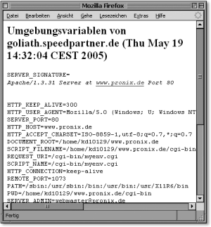
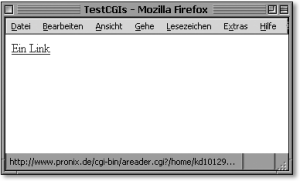
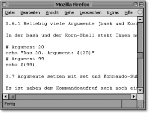
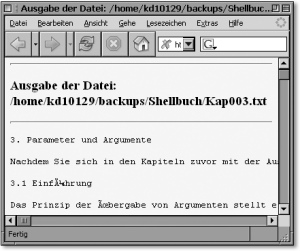
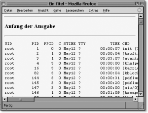
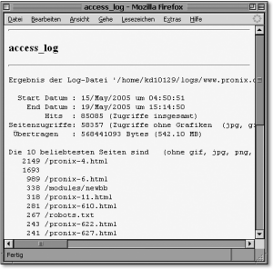
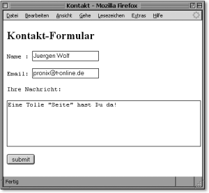
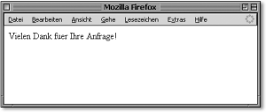

|
|
|
Noch ein paar Tipps, falls es nicht klappt:
 15.6.2 CGI-Environment ausgeben
|
|||||||||||||||||||||||||||||||||||||||||||||||||||||||||||||||||||||||||||||||||||||||||||||||||||||||||||||||||||||||||||||||||||||||||||||||||||||||||||||||||||||||||||||||||||||||||||||||||||||||||||||||||||||||||
| HTTP-Anfrage-Paket |
| Webserver |
| HTTP-Anfrage-Header des Webbrowsers |
#!/bin/sh
# myenv.cgi
# Umgebungsvariablen auf einem Server anzeigen
echo "Content-type: text/html"
echo
echo "<html><body><h2>Umgebungsvariablen von"\
" `uname -n` (`date`)</h2>"
echo "<pre>"
# Wenn env nicht vorhanden, dann printenv ausführen ...
env || printenv
echo "</pre></body></html>"
Das Script bei der Ausführung sehen Sie in Abbildung 15.1.
|
 Abbildung 15.1 Das Script myenv.cgi bei der Ausführung |
Einen Hinweis noch zu:
echo "Content-type: text/html"
Damit teilen Sie dem Webserver mit, dass Ihre CGI-Anwendung ein bestimmtes Dokument ausgibt (Content-Type-Dokument). Im Beispiel handelt es sich um ein HTML-Dokument. Außerdem ist es von Bedeutung, dass hinter dieser Angabe zwei Newline-Zeichen stehen (hier durch die beiden echo-Aufrufe). Damit signalisieren Sie dem Webserver, dass es sich um die letzte »Headerzeile« handelt.
Ähnlich einfach wie die Ausgabe der Umgebungsvariablen lässt sich jede andere Ausgabe auf dem Browser realisieren. Wollen Sie zum Beispiel ein Shellscript über einen Link starten, so müssen Sie sich nur ein HTML-Dokument wie folgt zusammenbasteln:
<html> <head> <title>TestCGIs</title> </head> <body> <A HREF="/cgi-bin/areader.cgi?/srv/www/htdocs/docs/kap003.txt">Ein Link</A> </body> </html>
|
 Abbildung 15.2 Das HTML-Dokument zum Aufrufen eines Scripts (als Link) |
Das folgende Script areader.cgi macht wiederum nichts anderes, als die Textdatei kap003.txt mittels cat auf dem Browser auszugeben. Als Query-String geben Sie hinter dem Fragezeichen an, welche Datei hier gelesen werden soll. Für das Shellscript stellt dies wiederum den ersten Positionsparameter $1 dar. Der Link
/cgi-bin/areader.cgi?/srv/www/htdocs/docs/kap003.txt
besteht also aus zwei Werten, dem Pfad zum Shellscript
/cgi-bin/areader.cgi
und dem ersten Positionsparameter (Query-String)
/srv/www/htdocs/docs/kap003.txt
Ein solcher Query-String kann natürlich ganz andere Formen annehmen, dazu aber später mehr. Hierzu nun das Shellscript areader.cgi:
#!/bin/sh # Name: areader.cgi echo "Content-type: text/plain" echo cat $1 exit 0
Die Ausführung ist in Abbildung 15.3 zu sehen.
|
 Abbildung 15.3 Das Shellscript areader.cgi bei der Ausführung im Browser |
Natürlich dienen diese Beispiele nur als Mittel zum Zweck, um Ihnen zu demonstrieren, wie Sie Shellscripts auch als CGI-Scripts verwenden können, ohne allerdings den Sicherheitsaspekt zu berücksichtigen. Denn im Grunde ist die Zeile
/cgi-bin/areader.cgi?/srv/www/htdocs/docs/kap003.txt
ein ganz böses Foul, das Hackern Tür und Tor öffnet. Manipuliert man diese Zeile um in
/cgi-bin/areader.cgi?/etc/passwd /cgi-bin/areader.cgi?/etc/shadow
kann der Angreifer in aller Ruhe zu Hause per »Brute Force« das Passwort knacken (sofern dies nicht allzu stark ist – was leider meistens der Fall ist). Zumindest kann der Angreifer auf jeden Fall Systeminformationen sammeln, um eventuelle Schwachstellen des Rechners aufzuspüren.
Ein sicherere Alternative wäre es beispielsweise, die Usereingabe auf [a-z] zu prüfen. Wenn andere Zeichen vorkommen, dann abbrechen, und ansonsten den Pfad und die Endung vom Script ergänzen lassen.
if echo $1 | grep -q '[^a-z]' then echo Schlingel exit 0 fi file="/pfad/nach/irgendwo/$1.txt" if [ -e $file ] then echo Nueschte exit 0 fi
Des Weiteren sollten Sie bei CGI-Programmen immer 0 zurückgeben, wenn alles glatt verlaufen ist, damit überhaupt etwas auf dem Bildschirm ausgegeben wird. Bei vielen Installationen entsteht nämlich bei Rückgabe ungleich 0 der 500er-Fehler.
In der Praxis werden Sie wohl kaum immer nur reinen Text ausgeben, sondern die Ausgabe mit vielen HTML- oder CSS-Elementen verschönern wollen. Im Gegensatz zum Beispiel zuvor ist hierfür nicht allzu viel nötig (geringe HTML-Kenntnisse vorausgesetzt). Zuerst wieder das HTML-Dokument (unverändert):
<html> <head> <title>TestCGIs</title> </head> <body> <A HREF="/cgi-bin/a_html_reader.cgi?/srv/www/htdocs/docs/kap003.txt">Ein Link</A> </body> </html>
Als Nächstes das Shellscript areader.cgi, allerdings ein wenig umgeschrieben (und umbenannt) mit einigen HTML-Konstrukten, um den Text browsergerecht zu servieren:
#!/bin/sh # a_html_reader.cgi echo "Content-type: text/html" echo "" cat << HEADER <HTML> <HEAD><TITLE>Ausgabe der Datei: $1</TITLE> </HEAD> <BODY bgcolor="#FFFF00" text="#000000"> <HR SIZE=3> <H1>Ausgabe der Datei: $1 </H1> <HR SIZE=3> <P> <SMALL> <PRE> HEADER cat $1 cat << FOOTER </PRE> </SMALL> <P> <HR SIZE=3> <H1><B>Ende</B> Ausgabe der Datei: $1 </H1> <HR SIZE=3> </BODY> </HTML> FOOTER exit 0
Das Script bei der Ausführung zeigt Abbildung 15.4.
|
 Abbildung 15.4 Ein einfaches Textdokument, mit HTML formatiert |
Soweit haben Sie nun eine HTML-formatierte Ausgabe. Allerdings ist es noch praktischer, den HTML-Teil wiederum in eine extra Datei auszulagern. Dies erhält zum einen die Übersicht des Shellscripts, und zum anderen kann man jederzeit das »Layout« gegen ein anderes austauschen. Ich teile z. B. die beiden Bereiche um den eigentlichen Arbeitsteil des Shellscripts in einen Kopfteil (header.txt) und einen Fußteil (footer.txt) auf. Zuerst die Datei header.txt:
<HTML> <HEAD><TITLE>Ein Titel</TITLE> </HEAD> <BODY bgcolor="#FFFF00" text="#000000"> <HR SIZE=3> <H1>Ausgabe Anfang: </H1> <HR SIZE=3> <P> <SMALL> <PRE>
Und jetzt noch die Datei footer.txt:
</PRE> </SMALL> <P> <HR SIZE=3> <H1><B>Ende</B> der Ausgabe</H1> <HR SIZE=3> </BODY> </HTML>
Beide Dateien können Sie nun auch wieder im Shellscript einfach mit cat ausgeben lassen. Somit sieht das eigentliche Shellscript gegenüber der Version a_html_reader.cgi wie folgt aus:
#!/bin/sh echo "Content-type: text/html" echo "" cat /srv/www/htdocs/docs/header.txt cat $1 cat /srv/www/htdocs/docs/footer.txt exit 0
Wie Sie im Beispiel eben den Befehl cat verwendet haben, so können Sie auch alle anderen Kommandos (je nach Rechten) bzw. ganze Shellscripts ausführen. Das folgende Script gibt z. B. Auskunft über alle aktuell laufenden Prozesse:
#!/bin/sh # Name: html_ps.cgi echo "Content-type: text/html" echo cat /srv/www/htdocs/docs/header.txt ps -ef cat /srv/www/htdocs/docs/footer.txt exit 0
Das Script bei der Ausführung zeigt Abbildung 15.5.
|
 Abbildung 15.5 Ausgabe aller laufenden Prozesse auf einem entfernten System |
Ebenso einfach können Sie hierbei auch andere Shellscripts ausführen lassen. Sinnvoll erscheint mir hierbei die Ausgabe von access_log und error_log. Das folgende Beispiel verwendet das Script readaccess aus Abschnitt 15.5.1:
#!/bin/sh # Name: html_access_log.cgi # Apaches access_log analysieren und ausgeben echo "Content-type: text/html" echo cat /srv/www/htdocs/docs/header.txt ./readaccess /pfad/zum/logfile/access_log cat /srv/www/htdocs/docs/footer.txt exit 0
Abbildung 15.6 zeigt das Script bei der Ausführung.
|
 Abbildung 15.6 Auswertung von access_log mit dem Browser |
Sie sehen, CGI-Scripts können mit der Shell beinahe unbegrenzt verwendet werden.
Ein Kontaktformular erfordert eine Eingabe vom Benutzer. Dies auszuwerten, ist wiederum nicht ganz so einfach. Zunächst muss man festlegen, mit welcher Methode diese Daten empfangen werden. Hierbei gibt es die Möglichkeit GET, bei der der Browser die Zeichenkette(n) der Eingaben am Ende der URL anhängt. Bei einem Textfeld »name« mit der Benutzereingabe »Wolf« sieht die URL wie folgt aus:
http://www.pronix.de/cgi-bin/script.cgi?name=wolf
Befindet sich jetzt hier auch noch ein weiteres Textfeld namens »vorname« und die Benutzereingabe lautet »John«, so sieht die URL wie folgt aus:
http://www.pronix.de/cgi-bin/script.cgi?name=wolf&vorname=john
Das Ampersandzeichen & dient hier als Trenner zwischen den einzelnen Variablen/Werte-Paaren. Der Webserver entfernt gewöhnlich diese Zeichenkette und übergibt dies der Variablen QUERY_STRING. Den QUERY_STRING auszuwerten ist die Aufgabe des Programmierers.
Die zweite Möglichkeit ist die Übergabe der Werte mit der POST-Methode. Bei ihr werden die Daten nicht in einer der Umgebungsvariablen abgelegt, sondern in die Standardeingabe (stdin). Sie können somit die CGI-Anwendung so schreiben, als würde die Eingabe von der Tastatur vorgenommen.
Damit Sie sich schon ein Bild vom folgenden Beispiel machen können, soll hier das HTML-Formular bereits erstellt werden, in das anschließend die Eingabe des Benutzers vorgenommen werden kann:
<html> <head> <title>Kontakt</title> </head> <body> <form method="post" action="/cgi-bin/contact.cgi"> <h2>Kontakt-Formular</h2> <pre> Name : <input type="text" name="name"><br> Email: <input type="text" name="email"><br> Ihre Nachricht:<br> <textarea rows="5" cols="50" name="comments"></textarea><br> <input type="submit" value="submit"> </pre> </form> </body> </html>
Das Formular zeigt Abbildung 15.7.
|
 Abbildung 15.7 Das HTML-Kontakt-Formular |
In der Zeile
<form method="post" action="/cgi-bin/contact.cgi"
können Sie erkennen, dass in diesem Beispiel die POST-Methode verwendet wird, womit Sie die Daten von der Standardeingabe erhalten.
Würden Sie jetzt in Ihrem Script von der Standardeingabe lesen und dies ausgeben lassen, so würde Folgendes angezeigt (eine Zeile):
name=Juergen+Wolf&email=pronix%40t-online.de&comments= Eine+Tolle+%22Seite%22+hast+Du+da%21
Also noch lange nicht das gewünschte Ergebnis. Um hieraus die Ergebnisse zu extrahieren, müssen Sie die Standardeingabe parsen, sprich lesefreundlich dekodieren. Ein Überblick über die Zeichen, die hier von besonderer Bedeutung sind:
| & – einzelne Formularelemente (sofern es mehrere sind) werden mit diesem Zeichen getrennt. |
name=Juergen+Wolf email=pronix%40t-online.de comments= Eine+Tolle+%22Seite%22+hast+Du+da%21
| = – mit diesem Zeichen werden die Variable/Wert-Paare voneinander getrennt. |
name Juergen+Wolf email pronix%40t-online.de comments Eine+Tolle+%22Seite%22+hast+Du+da%21
| + – damit werden die Leerzeichen der eingegebenen Daten getrennt. |
name Juergen Wolf email pronix%40t-online.de comments Eine Tolle %22Seite%22 hast Du da%21
| %XX – Bei einem Prozentzeichen gefolgt von zwei hexadezimalen Ziffern handelt es sich um ASCII-Zeichen mit dem dezimalen Wert von 128 bis 255. Diese hexadezimalen Ziffern müssen in ASCII-Zeichen dekodiert werden. |
name Juergen Wolf email pronix@t-online.de comments Eine Tolle "Seite" hast Du da!
Die ersten drei Punkte können Sie bspw. folgendermaßen dekodieren:
tr '&+=' '\n \t'
Hiermit ersetzen Sie das Zeichen »&« durch ein Newline-Zeichen, das »+«-Zeichen durch ein Leerzeichen und das »=«-Zeichen durch ein Tabulatorzeichen.
Die hexadezimale Ziffer dekodieren Sie mit einer einzelnen sed-Zeile:
echo -e `sed 's/%\(..\)/\\\x\1/g'`
|
Hinweis Nicht mit eingeschlossen sind hierbei die deutschen Umlaute »üäöß...«. |
Mehr ist nicht erforderlich, um den Eingabestring von einem HTML-Formular zu parsen. Das folgende Script wertet den Inhalt eines solchen Kontaktformulars aus und sendet diesen mit sendmail an die Adresse »empfaenger«. Am Ende wird noch eine HTML-Seite als Bestätigung auf dem Browser erzeugt.
#!/bin/sh # Name: contact.cgi # Auswerten der Formmail empfaenger="you@host" ( cat << MAIL From: www@`hostname` To: $empfaenger Subject: Kontakt-Anfrage Ihrer Webseite Inhalt der Eingabe lautet: MAIL # Eingabestring dekodieren cat – | tr '&+=' '\n \t' | echo -e `sed 's/%\(..\)/\\\x\1/g'` echo "" echo "Abgeschickt am `date`" ) | sendmail -t echo "Content-type: text/html" echo "" echo "<html><body>" echo "Vielen Dank fuer Ihre Anfrage!" echo "</body></html>" exit 0
Das Script bei der Ausführung:
|
 Abbildung 15.8 Die Antwortseite nach dem Drücken des Submit-Buttons |
Wenn Sie jetzt einen Blick in Ihr Mail-Postfach werfen, werden Sie eine entsprechende E-Mail finden, die zeigt, was im Kontakt-Formular eingegeben wurde.
Natürlich ist anzumerken, dass Sie nur einen ersten Einblick zum Thema CGI erhalten haben. Wie bereits erwähnt, können Sie sich hierzu auf meiner Homepage http://www.pronix.de (allerdings in der Programmiersprache C) einen etwas umfangreicheren Überblick verschaffen, falls, Sie mehr Informationen dazu benötigen.
Wie hat Ihnen das <openbook> gefallen? Wir freuen uns immer über Ihre freundlichen und kritischen Rückmeldungen.
>> Zum Feedback-Formular| << zurück |
|
||||||||||||
|
||||||||||||
|
||||||||||||
Copyright © Rheinwerk Verlag GmbH 2005
Für Ihren privaten Gebrauch dürfen Sie die Online-Version natürlich ausdrucken. Ansonsten unterliegt das <openbook> denselben Bestimmungen, wie die gebundene Ausgabe: Das Werk einschließlich aller seiner Teile ist urheberrechtlich geschützt. Alle Rechte vorbehalten einschließlich der Vervielfältigung, Übersetzung, Mikroverfilmung sowie Einspeicherung und Verarbeitung in elektronischen Systemen.


 bestellen
bestellen